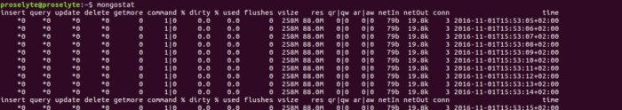
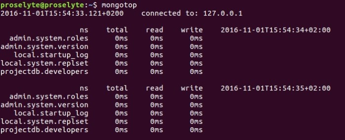
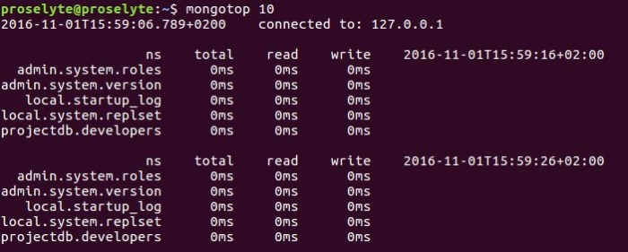

Деплоймент (развёртывание).
Для начала нам необходимо понять, как именно наше приложение будет запускаться на “боевых” серверах.
Наиболее лучшим подходом является прототипирование установки, мониторинг метрики, нагрузочное тестирование и использовать данную информацию для установки нашего приложения. Важнейшей частью данного подхода является мониторинг системы, что даёт понимание того, как будет вести себя наша система перед запуском и помогает определить, где нам необходимо увеличить пропускную способность.
Для мониторинга деполймента в MongoDB существуют следующие команды:
• mongostat
• mongotop
Команда mongostat проверяет статус всех работающих экземпляров mongod и возвращает счётчики операций базы данных (далее – БД). Данные счётчики включают в себя запись данных, запросы, изменения, удаления и курсоры.
Для получения данных нам необходимо выполнить в терминале следующую команду:
> mongostat
В результате выполнения данной команды мы получим следующий результат:

Команда mongotop отслеживает и делает отчёты о чтении и записи данных в коллекции экземпляра MongoDB. По умолчанию, mongotop возвращает информацию за каждую секунду, но мы можем изменить временной параметр. Мы должны проверить, что данная активность отвечает требованиям нашей системы и, что мы не пытаемся превысить возможности нашей системы.
Для получения данной информации нам необходимо выполнить следующую команду:
> mongotop
В результате выполнения данной команды, мы получим следующий результате:

Для корректировки времени обновления информации, нам необходимо использовать следующую команду:
> mongotop 10
Где 10 – это время обновления в секундах.
В результате выполнения данной команды, мы получим следующий результате:

Отдельно от MongoDB, 10gen поставляет бесплатный сервис для мониторинга БД – MongoDB Management System (MMS), которая предоставляет информацию по целому кластеру.